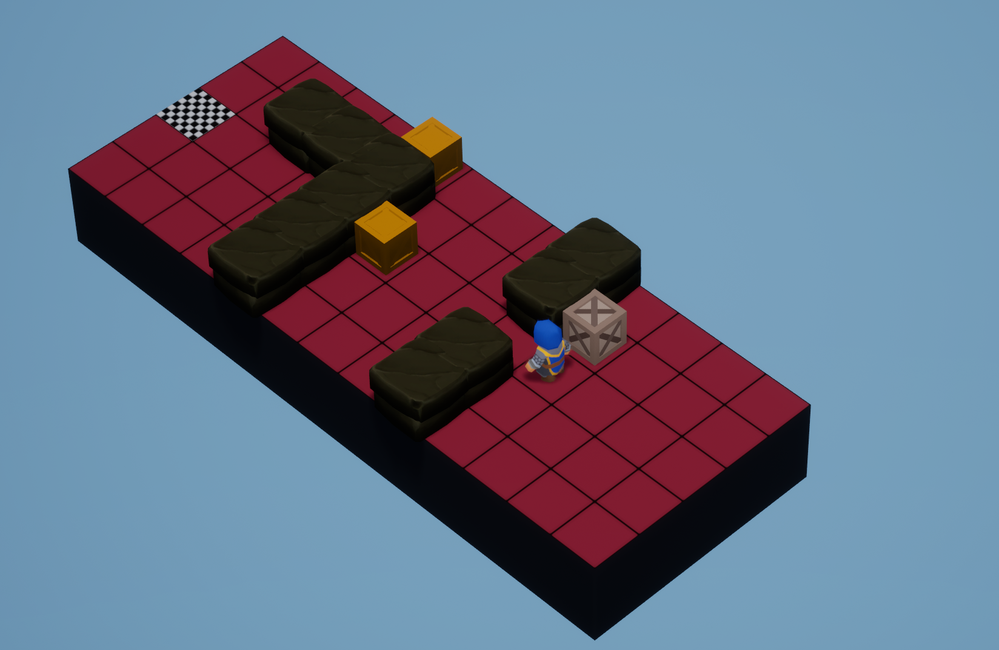

02 / Gameplay + level design
Tile-Based Puzzle Game
Expanding an existing game with interactive mechanisms and three levels that introduce, reinforce, and combine puzzle mechanics.

The design challenge
Extend the systems.
Give them room to play.
I expanded an existing Unreal Engine puzzle game with additional mechanics and three short levels. My work connected pressure plates and doors, animated those mechanisms, and introduced the interactions through a sequence of increasingly combined puzzles.
The starting project already contained most of its core mechanics. This case study focuses on the mechanics and levels I added while working within that existing game.
My contributions
- Added mechanics and designed three new puzzle levels.
- Used Blueprint Interfaces and Event Dispatchers for communication between gameplay objects, including pressure plates and doors.
- Animated doors and pressure plates with Timelines and linear interpolation.
- Planned a sequence that introduces, reinforces, and combines puzzle mechanics.
- Organized objectives and deadlines in ClickUp across three one-week sprints.
- Simplified parts of the Blueprint logic using Boolean conditions and fewer unnecessary variables.
Gameplay systems
A connected puzzle space.
Pressure plates & doors
Pressure plates communicate with doors so that an interaction in one part of the level changes access elsewhere. Blueprint Interfaces and Event Dispatchers connect those gameplay objects.
Animated responses
I used Timelines and linear interpolation to animate doors and pressure plates, giving the mechanisms visible movement when their state changes.
Level design
Introduce. Reinforce. Combine.
My design intent was to establish each interaction before asking the player to combine the mechanics in a larger challenge.
Introduce the boxes
The first level introduces boxes that the player can move. Yellow boxes continue moving until they meet a wall, establishing a behavior for later puzzles.
Connect boxes, plates & doors
The second level reinforces box movement and introduces pressure plates and doors. Pushing a box onto a plate connects a placement decision to access through the level.
Combine the mechanics
The third level brings the earlier mechanics together in a more difficult layout, asking the player to consider how the interactions work as a set.
Project gallery
Game views from the project, showing the layouts and the relationship between routes, obstacles, and interactable objects.



Project retrospective
What I would carry forward.
Understand the existing systems first
I initially spent too little time understanding the starting code, which slowed down the additions. The lesson was to investigate how the original systems work before extending them.
Be deliberate about variable ownership
A problem involving a variable held by an instantiated Blueprint highlighted the importance of checking where shared information lives. I also found places where a simpler Boolean condition could replace extra variables.
Document the graph while building it
I added some Blueprint comments later than I should have. Explaining the purpose of a graph during implementation would make the logic easier for another developer to follow.
Protect time for level design
ClickUp helped me define objectives and deadlines across the three sprints. In a future iteration, I would reserve more time specifically for level design and expanding the set of puzzles.